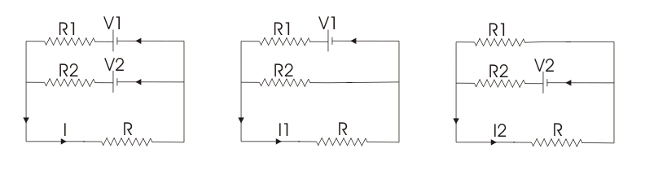

Superposition Theorem
This theorem is a very simple one. Suppose a branch of an electrical circuit is connected to numbers of voltage and current source s. As we can consider electrical electric current as electrical quantity, it can be easily assumed that total electric current flows through the branch is nothing but the summation of all individual currents, contributed by the each individual voltage or current source . This simple conception mathematically represents the Superposition theorem.
If there are several sources acting simultaneously in an electrical circuit, then the electric current through any branch of the circuit is summation of currents which would flow through the branch for each source keeping all other sources dead. Suppose there are n number of sources acting in a circuit due to which I electric current flows through a particular branch of the circuit. If someone replaces all the sources from the circuit by their internal resistance except first source which is now acting along in the circuit and giving electric current I1 through the said branch, then he or she reconnects the second source and replaces the first source by its internal resistance. Now the electric current through that said branch for this second source alone can be assumed I2. Similarly if he or she reconnects the third source and replaces the second source by its internal resistance. Now the electric current through that said branch for this third source, alone is assumed I3. Similarly when nth source acts alone in the circuit and all other sources are replaced by their internal electrical resistances, then said In electric current flows through the said branch of the circuit. Now according to Superposition theorem, electric current through the branch when all the sources are acting on the circuit simultaneously, is nothing but summation of these individual electric current caused by individual sources acting alone on the circuit.
Electrical sources may be of two kinds mainly, one is voltage source and other is current source . When we remove the voltage source from a circuit, the voltage, was contributed to the circuit becomes zero. So for getting zero electric potential difference between the points where the removed voltage source was connected, these two points must be short circuited by zero resistance path. For more accuracy, one can replace the voltage source by its internal resistance. Now if we remove a current source from the circuit, electric current is contributed by this source will become zero. Zero electric current implies open circuit. So when we remove current source from a circuit, we just disconnect the source from the circuit terminals and keep both terminals open circuited. As the ideal internal resistance of a current source is infinitely large, removing a current source from a circuit can be alternatively referred as replacing the current source by its internal resistance. So for superposition theorem, the voltage source s are replaced by short circuits and current source s are replaced by open circuits.
This theorem is only applicable to linear circuit i.e. circuit consisting of resistances in which Ohm’s law is valid. In the circuits having non - linear resistances such as thermionic valves, metallic rectifiers this theorem will not be applicable. This theorem is a more laborious one than many other circuit theorems. But main advantage of this method is that, it avoids solutions of two or more simultaneous equations. But after a little practice with this method, equations can be written directly from the original circuit diagram and labor in drawing extra diagrams can be saved. For better understanding of the procedure, we have furnished the different steps of Superposition theorem as follows,
Step - 1
Replace all but one of the sources by their internal resistances.
Step - 2
Determine the currents in various branches using simple Ohm’s law .
Step - 3
Repeat the process using each of the sources turn - by turn as the sole source each time.
Step - 4
Add all the currents in a particular branch due to each source. This is the desired value of electric current at that branch when all the sources acting on the circuit simultaneously.
Example of Superposition Theorem
Suppose there are two voltage source s V1 and V2 acting simultaneously on the circuit.
Because of these two voltage sources, say electric current I flows through the resistance R.

Now replace V2 by short circuit, keeping V1 at its position and measure electric current through the resistance, R. Say it is I1.
Then replace, V1 by short circuit, reconnect V2 to its original position and measure electric current through the same resistance R and say it is I2.
Now if we add these two currents, I1 and I2 we will get the electric current which is equal to the electric current - was actually flowing through R, when both voltage source s V1 and V2 were acting on the circuit simultaneously. That is I1 + I2 = I.
 by
by